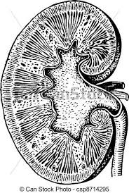

La donación de órganos es un tema muy contigente en nuestro país, y como tal debemos tomar conciencia de la situación qe se vive hoy en día. Por esto, para esta entrega decidimos mostrar cómo se distribuye la donación según género y sistema de salud.

 Grupo 6
Grupo 6